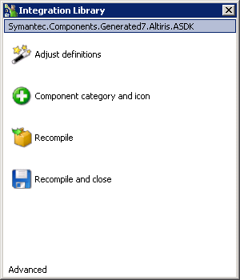
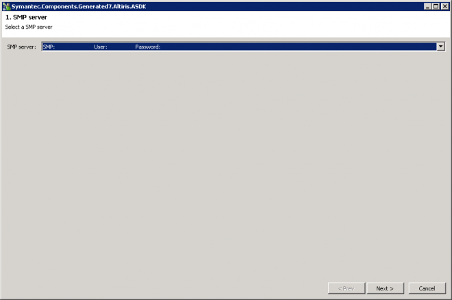
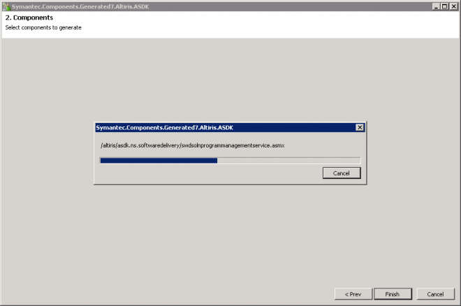
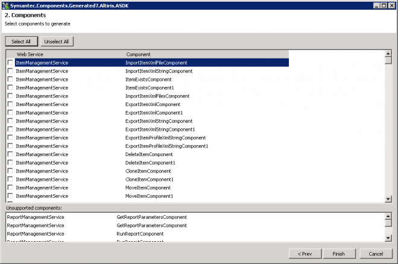
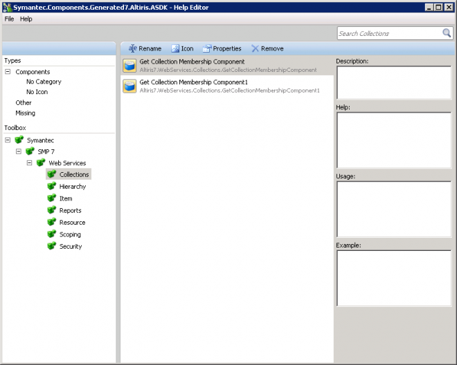

ASDK
| You may wish to backup this file before making any changes. |
|---|
 Symantec.Components.Generated7.Altiris.ASDK
Symantec.Components.Generated7.Altiris.ASDK
[Install Drive]:\Program Files\Symantec\Workflow\WorkflowProjects\Symantec.Components.Generated7.Altiris.ASDK
Double click on the Integration Component and click "Adjust Definitions"

1. SMP server
Choose your SMP server, this will be a list from the  Workflow Explorer | Credentials | Symantec Management Platform
Workflow Explorer | Credentials | Symantec Management Platform

2. Components
This will run through all the Web Services.
- /altiris/asdk.ns/ItemManagementService.asmx
- /altiris/asdk.ns/CollectionManagementService.asmx
- /altiris/asdk.ns/ReportManagementService.asmx
- /altiris/asdk.ns/SecurityManagementService.asmx
- /altiris/asdk.ns/ResourceManagementService.asmx
- /altiris/asdk.ns/ScopingManagementService.asmx
- /altiris/asdk.ns/HierarchyManagementService.asmx
- /altiris/asdkasset/AssetManagementLibService.asmx
- /altiris/asdk.helpdesk/ContactManagementService.asmx
- /altiris/asdk.swd/softwaremanagementbasicservice.asmx
- /altiris/asdk.deploymentsolution/dstaskmanagementservice.asmx
- /altiris/asdk.ns.softwaredelivery/swdsolnadvertisementmanagementservice.asmx
- /altiris/asdk.ns.softwaredelivery/swdsolnpackagemanagementservice.asmx
- /altiris/asdk.ns.softwaredelivery/swdsolnprogrammanagementservice.asmx
- /altiris/asdk.smf/inventoryrulemanagementservice.asmx
- /altiris/asdk.smf/softwarecommandlinemanagementservice.asmx
- /altiris/asdk.smf/softwarecomponentmanagementservice.asmx
- /altiris/asdk.smf/softwarepackagemanagementservice.asmx
- /altiris/asdk.smf/softwareproductmanagementservice.asmx
- /altiris/asdk.swm/softwaredeliverypolicymanagementservice.asmx
- /altiris/asdk.swm/softwareportalmanagementservice.asmx
- /altiris/asdk.swm/softwaretasksmanagementservice.asmx

You can then tick any extra components you require in your Workflows.

Back to the Main Menu, click on "Compile and Close".
Add any Icons to the newly created components.

Web Services
The list of WS that are used in the Generator are defined in the following file.
| This is just for reference, don't amend this file. |
|---|
[Install Drive]:\Program Files\Symantec\Workflow\Designer\Plugins
Symantec.Generators7.ASDK.xml
Associated Plugin.
 Symantec.Generators7.ASDK.dll
Symantec.Generators7.ASDK.dll
Example content
<configuration>
<sources>
<sourcedef> <url>/altiris/asdk.ns/ItemManagementService.asmx</url> <category>Altiris 7.Web Services.Item</category>
</sourcedef>
...
</sources>
<components>
<componentDef>
<name>PushAltirisAgentToComputers</name>
</componentDef>
...
</components>
</configuration>